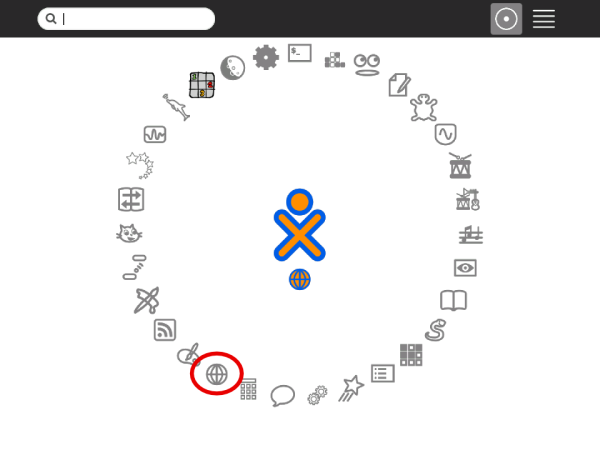
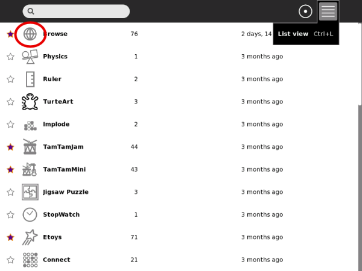
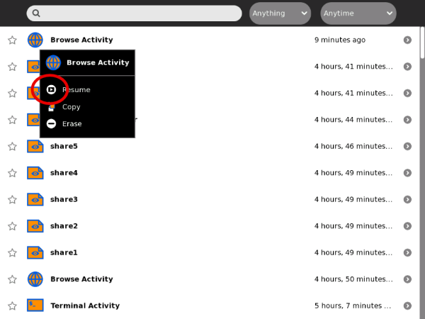
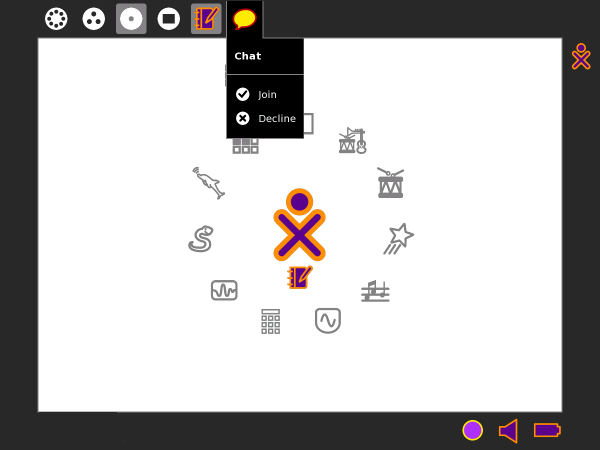

Launching Activities
You can launch an Activity in four different ways:
- Click the Activity icon in the Home View.
- Resume an Activity from the Journal View.
- Join a shared Activity from the Neighborhood View.
- Accept an invitation by clicking the invitation icon on the Frame.
When you launch an Activity, its icon flashes in the middle of the screen while the Activity loads.
Launching from the Ring view

Click the icon or click an option on the hover menu.
Launching from the List view

Click the icon or click an option on the hover menu.
Resuming from the Journal

Click the icon or click Resume on the hover menu.
Joining a shared Activity

Click the icon or click an option on the hover menu.
Joining an Activity by accepting an invitation
Click Join in the hover menu on the Frame.
Author : LaunchingActivities
© Walter Bender 2008
Modifications:
adam hyde 2008
David Farning 2008
Janet Swisher 2008
License : General Public License